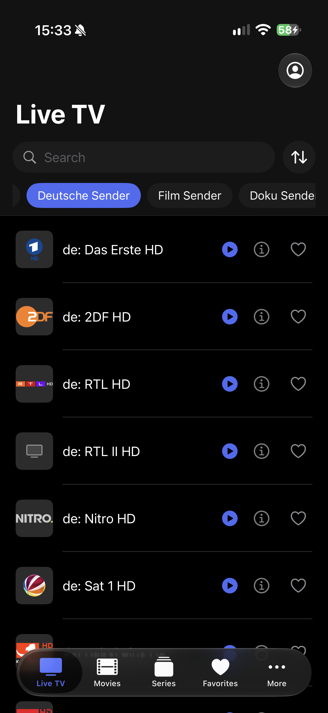
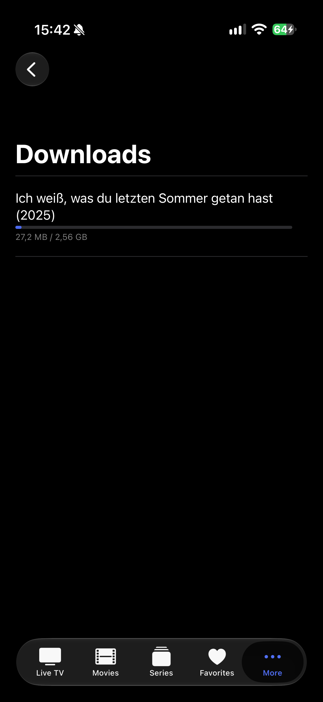

Aggiungi
Aggiungi un accesso Xtream Codes o un link M3U / M3U8
Accedi con Apple per sincronizzare preferiti e cronologia sui tuoi dispositivi

Xtream, EPG, senza ads
Lettore M3U
Un lettore semplice per la tua lista M3U o Xtream Codes.
TV in diretta, film e serie. Senza pubblicità.
Preferiti, download e ripresa.
Easytv Play è un lettore media. Non fornisce canali, abbonamenti o contenuti. Aggiungi solo una fonte che sei autorizzato a guardare. EPG, sottotitoli e qualità del flusso dipendono dal tuo provider.
Niente pubblicità. Niente tracciamento di terze parti.

LA TUA LISTA
Easytv Play non fornisce canali, abbonamenti o contenuti. Aggiungi solo una fonte che sei autorizzato a usare.
Preferiti, download, EPG, ripresa, sottotitoli, blocco Face ID e Accedi con Apple.
Aggiungi
Accedi con Apple per sincronizzare preferiti e cronologia sui tuoi dispositivi
TV in diretta
Cerca nella tua libreria e salva i preferiti
Guida

Riprendi

Download

Non fornisce canali, abbonamenti o contenuti. Aggiungi solo una fonte che sei autorizzato a guardare. EPG, sottotitoli e qualità del flusso dipendono dal tuo provider.
Niente pubblicità. Niente tracciamento di terze parti.
Schermate


Licenze
Questa app usa i seguenti componenti open source.
© VideoLAN e gli autori di VLCKit.
Concessa in licenza secondo la GNU Lesser General Public License, versione 2.1 o successiva (LGPL-2.1-or-later). Il framework è collegato dinamicamente e può essere sostituito dall’utente in conformità con la LGPL.
Easytv Play è un lettore IPTV per le tue playlist M3U o Xtream.
Riproduce TV in diretta, film e serie da quella lista, con preferiti, download e ripresa. Niente pubblicità. Niente tracciamento di terze parti.
Non fornisce canali, abbonamenti o contenuti. Aggiungi solo una fonte che sei autorizzato a guardare. EPG, sottotitoli e qualità del flusso dipendono dal tuo provider.
Easytv Play è un lettore media. Non fornisce canali, abbonamenti o contenuti. Aggiungi solo una fonte che sei autorizzato a guardare. EPG, sottotitoli e qualità del flusso dipendono dal tuo provider.
Aggiungi un accesso Xtream Codes o un link M3U / M3U8
Niente pubblicità. Niente tracciamento di terze parti.
Accedi con Apple per sincronizzare preferiti e cronologia sui tuoi dispositivi. Il dettaglio è nell’informativa sulla privacy.
Supporto per Easytv Play. Scrivi a hello@soneraltin.com.